Esta infografía muestra los diferentes espacios de conservación que pueden implementarse en establecimientos productivos para preservar la biodiversidad y mejorar la productividad.
Selecciona los espacios para conocerlos y comparar beneficios.

 


Conectividad 1 - Corredor Principal

Este corredor principal conecta las áreas naturales más grandes del paisaje. Según el informe INTA, los corredores principales deben tener al menos 30 metros de ancho para permitir el movimiento seguro de especies.
Recomendaciones: Mantener la vegetación nativa, evitar fragmentaciones y controlar especies exóticas invasoras.
Conectividad 2 - Zona de Transición

Área de transición entre espacios productivos y naturales. El informe INTA destaca que estas zonas son clave para la polinización y control biológico de plagas.
Recomendaciones: Enriquecer con especies nativas melíferas y mantener una estructura vegetal estratificada.
Conectividad 3 - Corredor Ribereño

Corredor lineal asociado a cursos de agua. Según el informe, estos corredores son esenciales para especies acuáticas y terrestres, mejorando la calidad del agua.
Recomendaciones: Proteger la vegetación ribereña y mantener un buffer de al menos 15 metros.
Conectividad 4 - Franja Forestal

Franja que conecta fragmentos de bosque nativo. El informe INTA recomienda estas estructuras para especies con baja capacidad de dispersión.
Recomendaciones: Ampliar el ancho donde sea posible y conectar con otros corredores.
Conectividad 5 - Área Núcleo

Área núcleo con alta biodiversidad. Según el informe, estas áreas son fundamentales para mantener poblaciones viables de especies.
Recomendaciones: Proteger de perturbaciones y conectar con otros espacios mediante corredores.
Leyenda
Capas
Espacios seleccionados
Descripción
Características
Beneficios para la producción
Beneficios para la biodiversidad
Comparación de espacios
Paso 1: Espacios seleccionados
Estos son los espacios de conservación que has seleccionado para comparar:


Análisis Gráfico
Para ver los gráficos, primero debes completar el proceso de comparación de espacios.